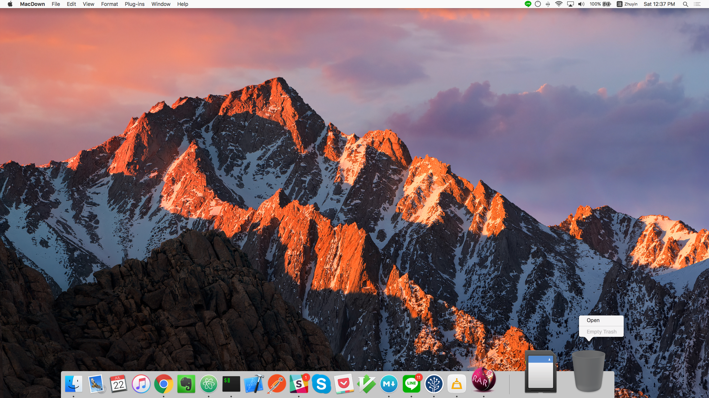
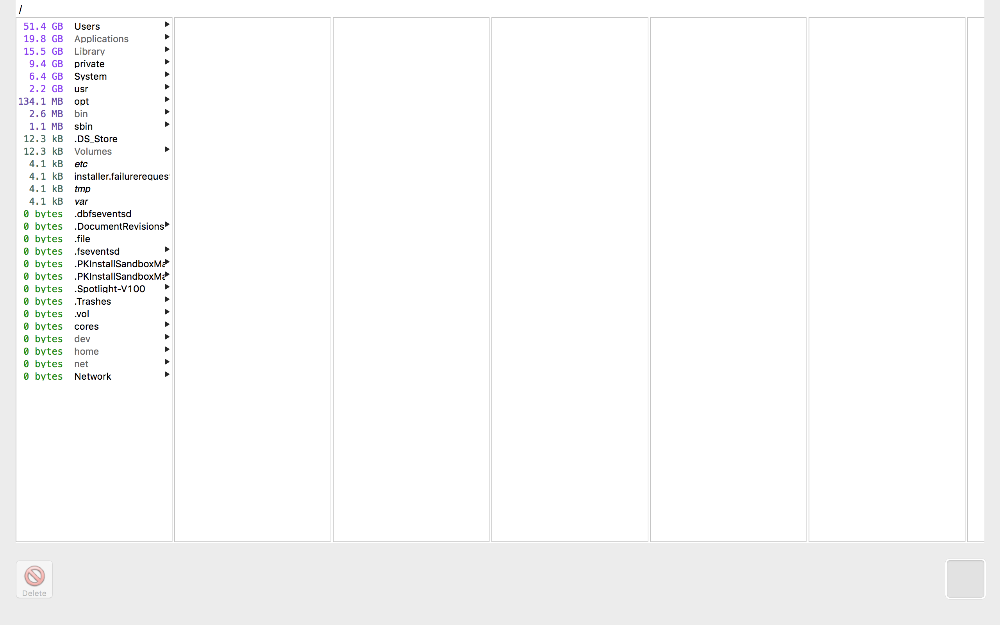
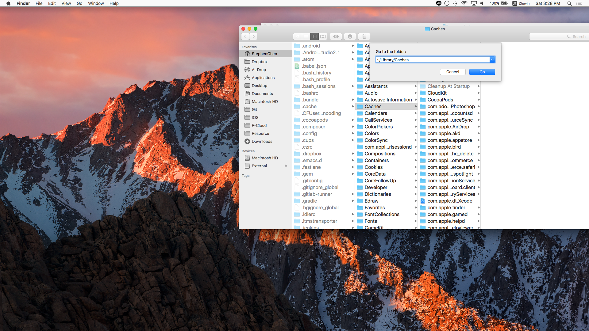
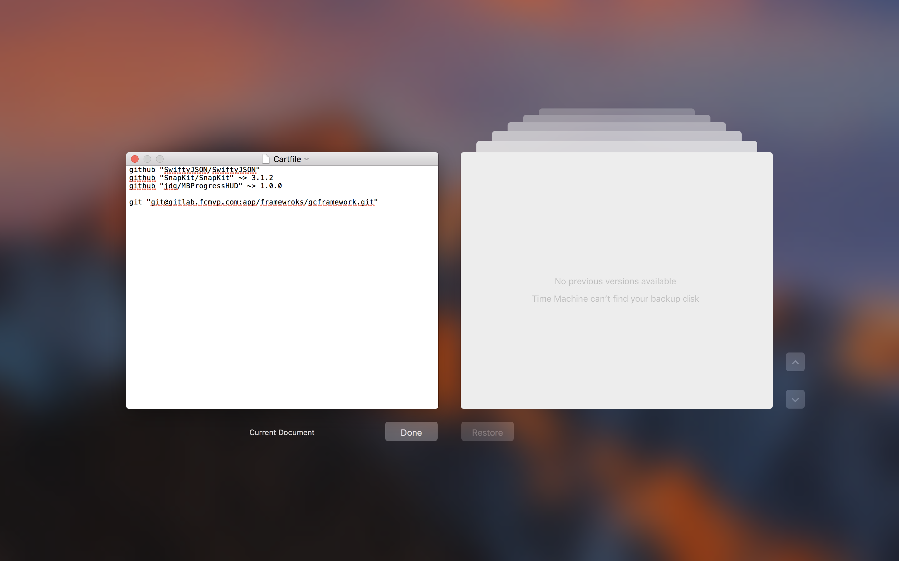

最近發現 Mac 空間不太足夠，又不太想換新的 Mac。只好用了最土法煉鋼的方式一個一個檢視。這裡紀錄這次清理 Mac 的步驟，順便制定SOP 方便日後又有問題可以來這裡回顧一下：）。
1. 首先先下載能掃描整個硬盤的工具
隨便一個都可以，只要能掃描就好
2. 掃描
在掃描過程中，會等待不少時間這時候可以先清理 垃圾桶 跟 下載目錄裡的檔案。
垃圾桶
首先最直覺的方式就是把垃圾桶清空，當然在清空前順便瀏覽一下哪些檔案是不小心移動進去的，防止不小心刪掉了某些重要的文件。

下載目錄
再來就是把下載過的檔案刪除，或者移到外部的硬碟。
3. 開始清理

結束掃描之後會出現類似的圖片，因為我比較沒時間一個一個資料夾去研究，所以我就會先針對比較大的去研究，比如像是 User, Applications, Library, private, System 底下去研究。
- 但是千萬別手動刪除 /tmp, /private, /var 底下的檔案
根據，如果你手動刪除或者修正的話會有機率出現崩潰或者奇怪的問題，但檔案又這麼大又不能手動很兩難那該怎辦呢？ 比較正確的做法是 重開機， 讓 OS 內建的程式去清理。
補充：
在 private/var/vm/sleepimage 有一個 Sleepimage，這簡單來說就是當電腦進入睡眠狀態，會把當前在 RAM 記憶體儲存下面，方便在下次使用的時候可以回復之前的狀態。所以假如當前 RAM 有 2G 的記憶體量，那就會有 2G 的 sleepimage 檔案。
4. 手動刪除緩存
很多應用程式都會有緩存，比如 Chrome 開了一個月，那緩存量一定非常驚人，這時候可以把 Chrome 關閉（整個關閉喔）就可以把緩存刪除，或者你可以手動刪除緩存

5. 結論
又省了一筆錢買 Mac…。
6. 推薦網站
這網站小弟覺得不錯，常常分享很多知識，如果你是 Mac 重度使用者，不妨加到我的最愛去吧。
2017.08.18 Update
根據這邊文章，新版的 Mac 提供 Versions Feature 跟 Auto-Save 的功能，可以讓你自動回覆到之前的檔案的狀態透過序列的方式。但同時會在 / 底下產生檔案來記錄歷史狀態。

|
|
如果沒有需要以上歷史紀錄的話，打開終端機來把它刪除吧。
|
|
最后更新： 2017年11月26日 11:02